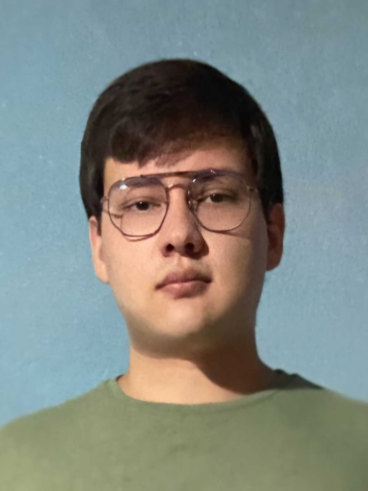

Atualmente, estou graduando em Engenharia da Computação pela Universidade Tecnológica Federal do Paraná (UTFPR).
Eu fiz parte do projeto de extensão de robótica "Overload", que promove o desenvolvimento acadêmico e profissional na área de robótica, e no momento estou fazendo uma Iniciação Científica sobre "Modelagem por teoria dos grafos para otimização logística e energética no corte, carregamento e transporte de culturas".
ODS 11
Graduação em Engenharia da Computação
UTFPR-CP
2021 - Atualmente
CV - Mario Issamu Barbuglio Morita - 2026